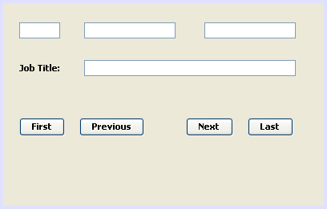
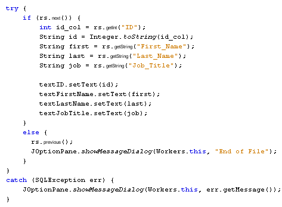
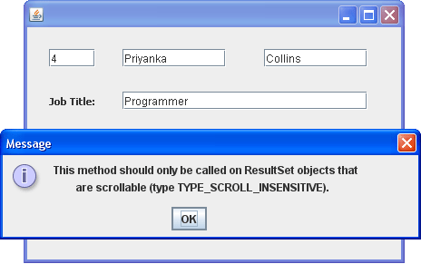
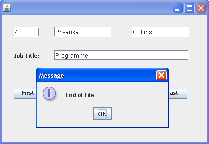

Database Scrolling Buttons
Databases and Java Forms: 1 2 3 4 5 6 7 8
What we'll do now is to add four buttons to the form. The buttons will enable us to move forward through the records, move back, move to the last record, and move to the first record.
So add a new panel to your form. Enlarge it and then add for buttons to the panel. Change the variable names of the buttons to the following:
btnNext
btnPrevious
btnLast
btnFirst
Change the text on each button the Next, Previous, Last, First. You form will then look something like this:

Move to the Next Record
Double click your Next button to create a code stub.
You need to do two things with the Next button: first, check if there is a next record to move to; and second, if there is a next record, display it in the Text Fields. We can create an IF Statement for this. But it needs to be wrapped up in a try … catch block. So add the following to your Next button code stub:
try {
if ( rs.next( ) ) {
}
else {
rs.previous( );
JOptionPane.showMessageDialog(Workers.this, "End
of File");
}
}
catch (SQLException err) {
JOptionPane.showMessageDialog(Workers.this, err.getMessage());
}
The IF Statement moves the ResultSet on one record at a time. If there isn't
a next record then a value of false is returned. The Else part moves the ResultSet
back one record. That's because the Cursor will have moved past the last record.
In the curly brackets for the IF Statement we can add the code to display the record in the Text Fields:
int id_col = rs.getInt("ID");
String id = Integer.toString(id_col);
String first = rs.getString("First_Name");
String last = rs.getString("Last_Name");
String job = rs.getString("Job_Title");
textID.setText(id);
textFirstName.setText(first);
textLastName.setText(last);
textJobTitle.setText(job);
This is the same code we have in our DoConnect method. (We could create a new method, so as not to duplicate any code, but we'll keep it simple.)
The code for your Next button should now look like this:

When you've added your code, run your programme and test it out. Keep clicking your next button and you'll scroll through all the records in the table. However, there is a problem.
When you get to the last record, you should see an error message appear:

The problem is that we've added an rs.previous line. However, we've used the default ResultSet type. As we explained in the last section, this gets you a ResultSet that can only move forward. We can use the type suggested in the error message.
Stop your programme and return to your coding window. In your DoConnect method, locate the following line:
stmt = con.createStatement( );
Change it to this (yours need to go on one line):
stmt = con.createStatement( ResultSet.TYPE_SCROLL_INSENSITIVE, ResultSet.CONCUR_UPDATABLE );
The ResultSet type will now allow us to scroll backwards as well as forwards.
Run your programme again. Click the Next button until you get to the last record. You should see the error message from the try part of the try … catch block appear:

In the next lesson, you'll learn how to backwards through your database records.
<-- Databases and Java Forms | Move Back through a Java Database -->